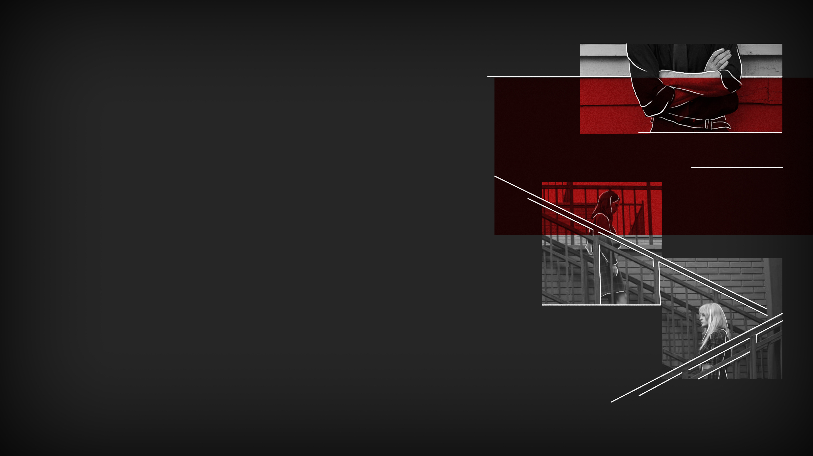

SPLITTED
SPLITTED

May 16th, 1.05 pm - Public school of the 15th area
«So you're saying we shouldn't have fought for our people to be free of this man who only tells lies?»
«Of course I'm not saying you should watch and do nothing about it. But you've put also innocent people's lives at risk. How is that justifiable?» professor Hudson replies to Lisa calmly, but with a firm tone.
«I'm sorry, aren't protests meant to be violent?» I interveene.